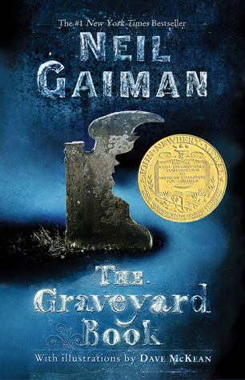
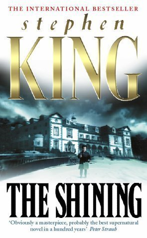
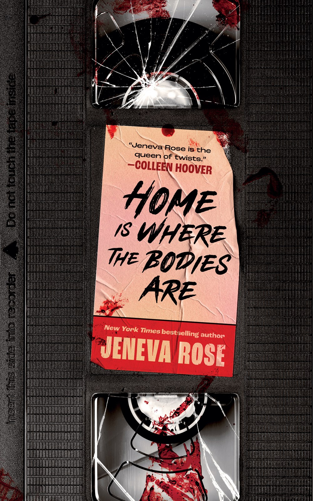
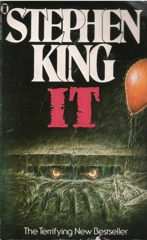
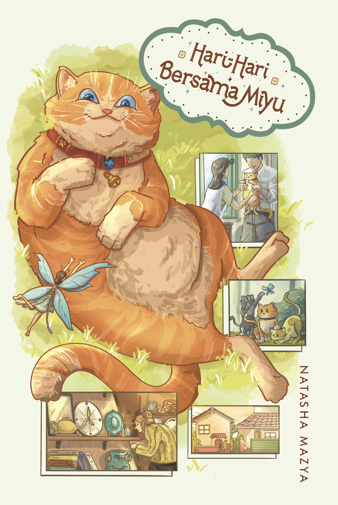
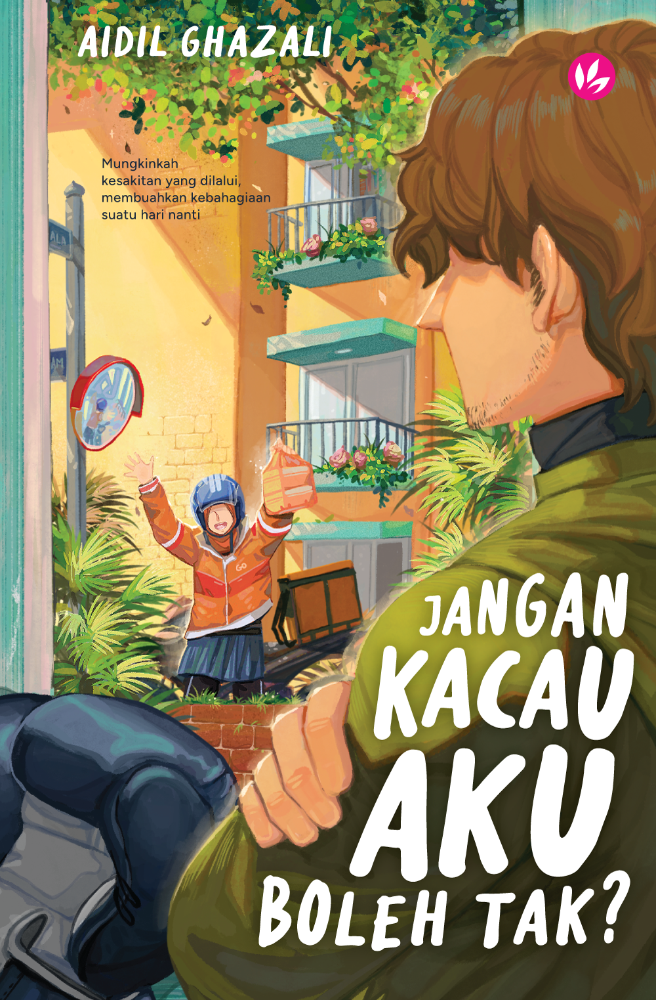
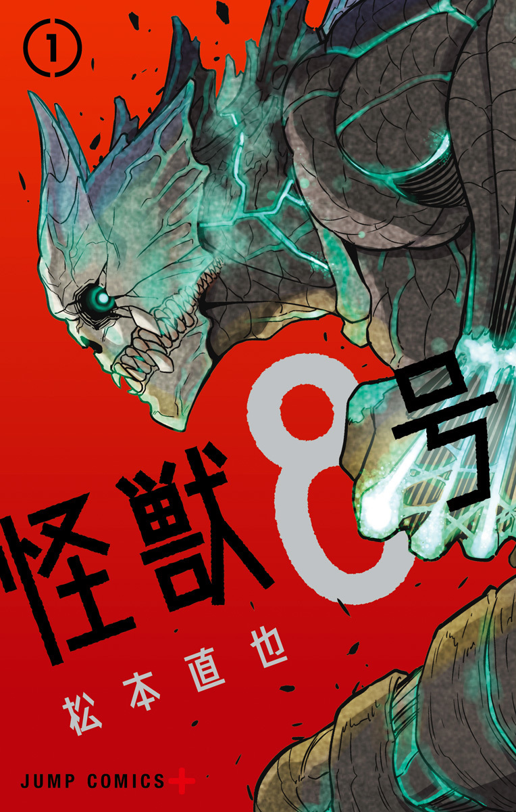
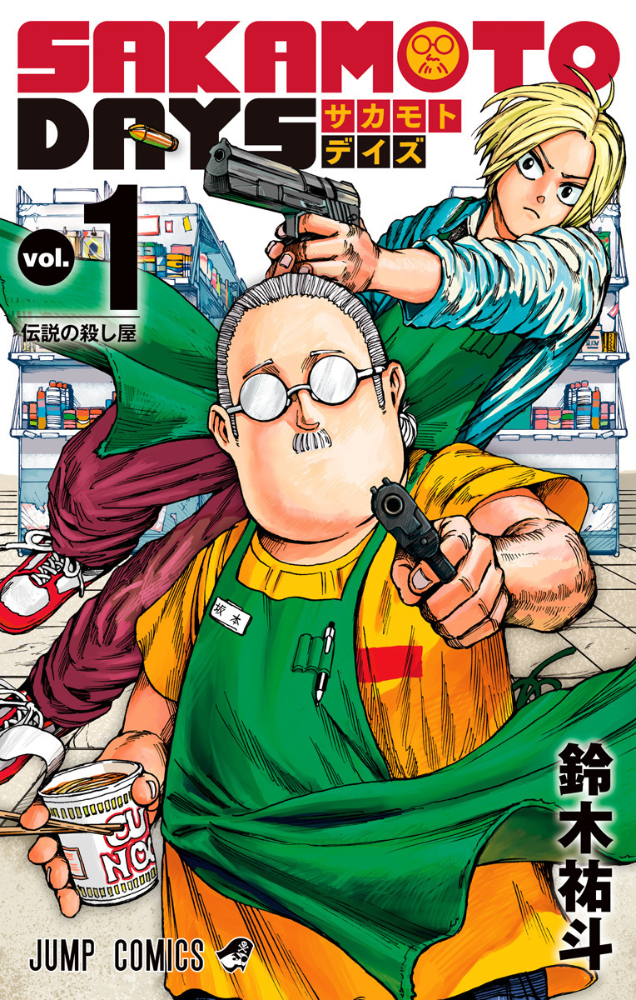

Harry Potter and the Goblet of Fire
In his fourth year at Hogwarts, Harry finds himself unexpectedly
entered into the legendary Triwizard Tournament. As he faces a series
of magical challenges, excitement and danger grow, setting the stage
for major changes in the wizarding world.

The Cats We Meet Along the Way
A stunning debut young adult novel set in Malaysia, charting Aisha
and her family on a roadtrip through the country in search of estranged
sister, June. Set against the backdrop of a world catastrophe, this novel
is full of love, healing and hope. Seventeen-year-old Aisha hasn't seen her
sister June for two years. And now that a calamity is about to end the world
in nine months' time, she and her mother decide that it's time to track her
down and mend the hurts of the past. Along with Aisha's boyfriend, Walter
and his parents (and Fleabag the stray cat), the group take a roadtrip through
Malaysia in a wildly decorated campervan - to put the past to rest, to come to
terms with the present, and to hope for the future.

Letters to God
Letters to God is about a journey of young girl named Sarah in
trying to find her footing in a challenging world. An introvert by
nature, Sarah strunggles to balance her work, life and her spritual
longing while trying to adapt to her new surroundings. She found
friendship along the way and also experienced hostility and heartache.
Not knowing who turn to, she decided to rant and rave to her Creator.
This is a story of how a young girl, who made a decision to write letters
to God, telling Him of all her worries, and pain. She believes that one can
talk to God at any time, any place, even outside prayers. Did Sarah find solace?
Or did she continue to be lost?

The Graveyard Book
Nobody Owens, known to his friends as Bod, is a perfectly normal boy.
Well, he would be perfectly normal if he didn't live in a graveyard,
being raised and educated by ghosts, with a solitary guardian who belongs
to neither the world of the living nor the world of the dead.

Pet Sematary
When Dr. Louis Creed takes a new job and moves his family to the idyllic
rural town of Ludlow, Maine, this new beginning seems too good to be true.
Yet despite Ludlow’s tranquility, an undercurrent of danger exists here.
Those trucks on the road outside the Creeds' beautiful old home travel by
just a little too quickly, for one thing…as is evidenced by the makeshift
graveyard in the nearby woods. Then there are the warnings to Louis, both
real and from the depths of his nightmares, that he should not venture beyond
the borders of this little graveyard. A blood-chilling truth is hidden there—one
more terrifying than death itself, and hideously more powerful. An ominous fate
befalls anyone who dares to tamper with this forbidden place, as louis is about
to discover for himself. As the story unfolds, so does a nightmare of the
supernatural, one so relentless you might not want to continue reading but
will be unable to stop.

The Shining
Jack Torrance's new job at the Overlook Hotel is the perfect chance
for a fresh start. As the off-season caretaker at the atmospheric old
hotel, he'll have plenty of time to spend reconnecting with his family
and working on his writing. But as the harsh winter weather sets in,
the idyllic location feels ever more remote...and more sinister. And
the only one to notice the strange and terrible forces gathering around
the Overlook is Danny Torrance, a uniquely gifted five-year-old.

Home Is Where the Bodies Are
After their mother passes, three estranged siblings
reunite to sort out her estate. Beth, the oldest, never left
home. She stayed with her mom, caring for her until the very end.
Nicole, the middle child, has been kept at arm's length due to her
ongoing battle with a serious drug addiction. Michael, the youngest,
lives out of state and hasn't been back to their small Wisconsin town
since their father ran out on them seven years before.

IT
Welcome to Derry, Maine ...
It’s a small city, a place as hauntingly familiar as your own hometown.
Only in Derry the haunting is real ...
They were seven teenagers when they first stumbled upon the horror.
Now they are grown-up men and women who have gone out into the big
world to gain success and happiness. But none of them can withstand
the force that has drawn them back to Derry to face the nightmare without
an end, and the evil without a name.

Elite Bunian: Api Bukit Tengkorak
Raed, seorang remaja dari alam bunian, sedang menyamar sebagai mata-mata di alam manusia.
Dia telah diberikan misi khas untuk menyelamatkan satu kebakaran hutan yang besar daripada
berlaku. Rose dan Rhu, dua kadet terbaik Elite Bunian, telah dihantar untuk membantu Raed.
Keadaan menjadi sukar, apabila Raed mendapat tahu kebakaran itu berpunca daripada syarikat
milik Encik Amir, bapa angkatnya di alam manusia.

Bayang Sofea
“Do you really think you can run from us, Sofea?”
Sofea, seorang pekerja yang berdedikasi dan bijak,
bercita-cita ingin berjaya di syarikat RICE dengan hasil usaha sendiri.
Dia menyangka kehidupannya akan menjadi normal sepertimana orang lain.

Hari-Hari Bersama Miyu
Miyu si kucing jingga yang gebu dan manja memerlukan perhatian
secukupnya daripada Natalia dan Zafran. Mujur dengan teknologi
VOCOLLA, haiwan jalanan dan peliharaan seperti Miyu kini mampu berbalas kata dengan manusia.

Jangan Kacau Aku Boleh Tak?
Ehsan, seorang atlet Muay Thai bersungguh-sungguh berlatih agar
dapat membanggakan ibunya. Namun, tragedi berlaku sehingga membuatkan
hati Ehsan luluh — sinar hidupnya hilang, dunia terasa gelap. Ehsan mula
mengurung diri. Hari-harinya dihabiskan hanya terperuk di dalam rumah,
memandang siling dengan renungan yang kosong. Sampailah suatu hari, tingkap
bilik Ehsan diketuk oleh seseorang — Dahlia! Apa yang dia buat di sini?

Spy x Family
名門校潜入のために「家族」を作れと命じられた凄腕スパイの〈黄昏〉。
だが、彼が出会った“娘"は心を読む超能力者! “妻"は暗殺者で!? 互いに正体を隠した仮初め家族が、
受験と世界の危機に立ち向かう痛快ホームコメディ!!

Dark Moon: The Blood Altar, Vol. 1
The seven most popular boys at Decelis Academy all share a secret―they’re
vampires. Keeping their identities concealed and dealing with their werewolf
rivals is trouble enough, but the appearance of a mysterious new student only
further complicates things. The girl, Sooha, also has hidden powers, and the boys
can’t help but feel an inexplicable attraction to her. As Sooha and the vampires
find themselves increasingly drawn toward each other, murky pasts and intertwined
futures threaten to turn their world upside down. Just what fate awaits them under the dark moon…?

Kaiju No. 8
怪獣発生率が世界屈指の日本。この国は、容赦なく怪獣が日常を侵していた。
かつて防衛隊員を目指していたが、今は怪獣専門清掃業で働く日比野カフカ。ある日カフカは、
謎の生物によって、身体が怪獣化、怪獣討伐を担う日本防衛隊からコードネーム「怪獣8号」と呼ばれる存在になる。

Sakamoto Days
町の商店を営むふくよかな男・坂本太郎。その正体は全ての悪党が恐れ、
憧れた元・伝説の殺し屋!! 襲い来る危険から家族と日常を守る、
坂本の日々とは…!? バトルとコメディが交錯するネオアクション活劇、開幕!!